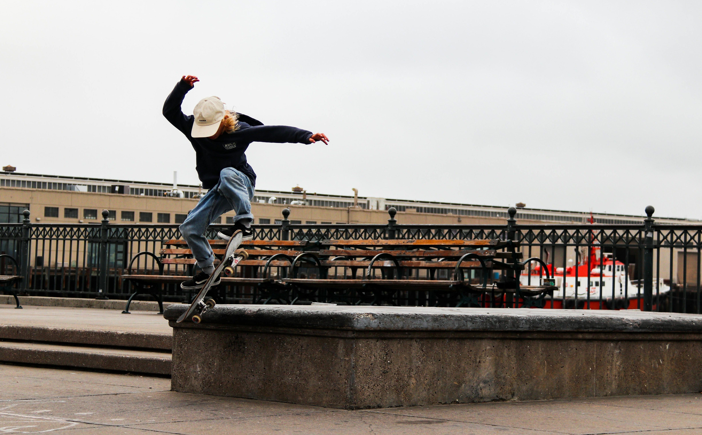
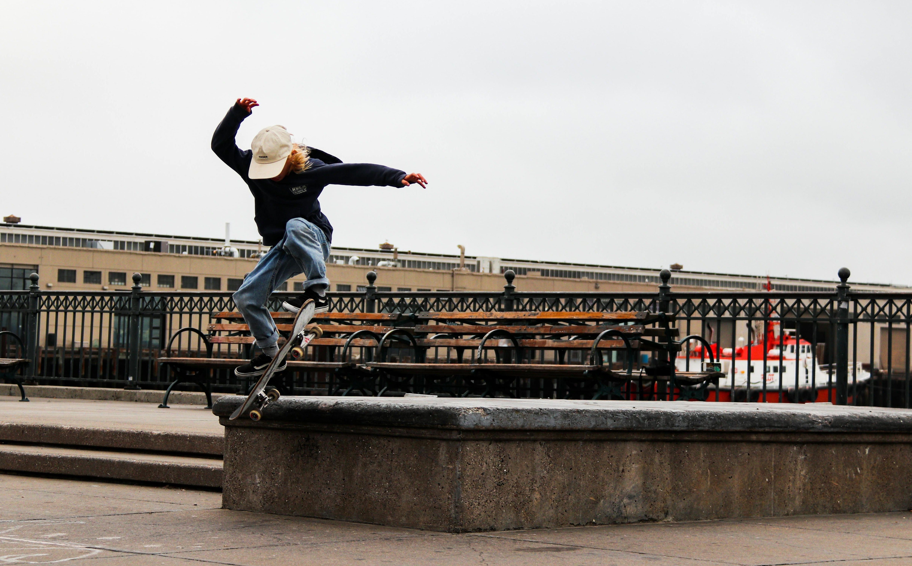

history
a brief history of skateboarding in san francisco
San Francisco holds an undeniable and legendary status in the annals of skateboarding history, particularly as a crucible for modern street skating. In the 1980s, while other cities were building skateparks, SF's steep hills, abundance of public plazas, unique ledges, and iconic stair sets provided an unparalleled natural terrain that forced innovation. Skaters like Tommy Guerrero and Jim Thiebaud, emerging from the Bones Brigade era, utilized the city's urban architecture as their playground, defining a raw, aggressive style that shifted skateboarding's focus from empty pools and ramps to the street. This environment cultivated a technical yet powerful approach to skating, deeply influencing the sport's direction.
 By the 1990s, San Francisco cemented its reputation as a global mecca for street skating. Spots like Pier 7, Justin Herman Plaza (often called "EMB" for Embarcadero), and Fort Miley became legendary proving grounds, drawing pros and aspiring amateurs from around the world. These spots not only showcased incredible talent but also became cultural hubs where new tricks were invented, styles evolved, and groundbreaking video parts were filmed. The city's challenging landscape, combined with a strong, independent skate scene and the rise of local companies, ensured San Francisco's enduring legacy as a city that didn't just participate in skateboarding history, but actively shaped its very foundation.
By the 1990s, San Francisco cemented its reputation as a global mecca for street skating. Spots like Pier 7, Justin Herman Plaza (often called "EMB" for Embarcadero), and Fort Miley became legendary proving grounds, drawing pros and aspiring amateurs from around the world. These spots not only showcased incredible talent but also became cultural hubs where new tricks were invented, styles evolved, and groundbreaking video parts were filmed. The city's challenging landscape, combined with a strong, independent skate scene and the rise of local companies, ensured San Francisco's enduring legacy as a city that didn't just participate in skateboarding history, but actively shaped its very foundation.
spots

 


spots
Skate spots are the unofficial, foundational elements of street skateboarding, fundamentally distinct from purpose-built skateparks or DIY constructions.
They are simply existing public or private locations that, through a skateboarder's unique perspective, reveal features ideal for tricks and maneuvers.
Unlike skateparks designed with specific obstacles, a true spot like a city ledge, a set of stairs, or a smooth bank wasn't created with skateboarding in mind.
Its perfection lies not in its original architectural intent, but in how it can be repurposed and creatively integrated into a skater's fluid interaction with the urban landscape.
Every spot presents a unique puzzle, fostering problem-solving and a raw, inventive style.
The allure also stems from discovery—the thrill of finding untapped potential in the everyday environment, often leading to a sense of community and shared knowledge among local skaters.
Furthermore, spots are often ephemeral, subject to changes like skate-stopping or demolition, reinforcing the dynamic and ever-evolving nature of street skating's relationship with the built world.
parks
Skateparks, in stark contrast to the impromptu nature of street spots, are purpose-built environments meticulously designed and constructed specifically for skateboarding and other wheeled sports. These dedicated facilities feature a range of obstacles like ramps, bowls, ledges, rails, and transition elements, all engineered to withstand the rigors of constant use and provide a structured arena for skaters. They offer a controlled and predictable setting where enthusiasts can practice tricks, develop skills, and push their limits on features optimized for progression.
The primary advantages of skateparks include safety, accessibility, and fostering a strong sense of community. By centralizing skateboarding activity in a designated space, skateparks reduce conflicts with pedestrians and property owners, offering a sanctioned alternative to street skating. They serve as vital hubs for local skate scenes, allowing riders of all ages and skill levels to gather, share knowledge, and inspire each other. While they may lack the raw, improvisational challenge of discovering and adapting to street spots, skateparks are crucial for the sport's growth, providing a safe and inviting platform for individuals to learn, innovate, and connect.
diy
DIY skate spots occupy a unique and crucial middle ground between natural street spots and professionally built skateparks. These are environments painstakingly constructed by skateboarders themselves, often in overlooked, abandoned, or underutilized urban spaces like derelict warehouses, empty lots, or forgotten industrial zones. Using basic materials such as concrete, wood, and found objects, skaters take it upon themselves to pour banks, mold ledges, build quarter pipes, and craft obstacles specifically designed for their sport. This process is driven purely by passion and ingenuity, transforming neglected areas into functional and innovative skateable terrain through sheer collective effort.
The significance of DIY spots extends beyond just providing a place to skate; they embody a powerful ethos of self-reliance, community, and creative rebellion. They are grassroots projects, born from the frustration of lacking adequate sanctioned spaces and a desire to build exactly what they want to skate. This hands-on creation fosters a profound sense of ownership and camaraderie among those involved, making them truly unique hubs of skateboarding culture. DIY parks offer a raw, unfiltered skating experience, constantly evolving as new features are added or modified, reflecting the immediate needs and boundless creativity of the local skate scene.